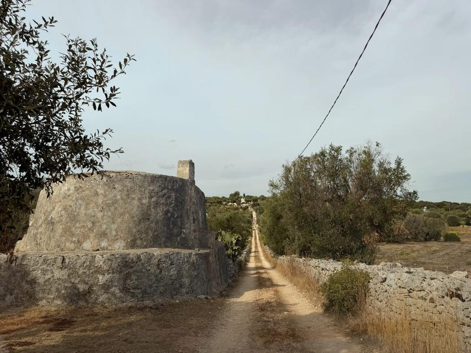

Camera matrimoniale
Letto matrimoniale sotto il soffitto a volta, armadio capiente e comodini. Una stanza semplice e luminosa.
Il nostro trullo nella campagna di Ostuni, a pochi minuti dal mare e dalla città bianca. Vi accogliamo con semplicità, con il piacere di condividere con voi la nostra Puglia.
Rocca Santa è il trullo di famiglia, nella campagna di Ostuni. Lo abbiamo restaurato rispettando quello che era: pietra, volte a cono, materiali locali.
Un posto dove stare bene, lontano dal rumore.

Due camere, un soggiorno con divano letto, la cucina e due bagni. Toccate una foto per vedere le altre.
Letto matrimoniale sotto il soffitto a volta, armadio capiente e comodini. Una stanza semplice e luminosa.
Due letti singoli nelle alcove in pietra del trullo, tra muri in pietra e piccole nicchie. Perfetta per bambini o amici.
Tavolo da pranzo e camino. Nell'alcova, un divano letto per altri due ospiti.
Con doccia e finestra. Biancheria da bagno inclusa.
Piano cottura a gas, frigorifero, microonde e macchina del caffè. Pentole e stoviglie per tutti.
Un secondo bagno completo con doccia, separato dalla casa. Comodo quando si è in tanti.
Costruzione tradizionale pugliese con volte a cono, muri in pietra calcarea a secco e interni curati nel rispetto dei materiali locali.
Spazio esterno privato tra gli ulivi, con area pranzo all'aperto.
Cucina completa con frigorifero, piano cottura e tutto il necessario per cucinare.
Connessione Wi-Fi e biancheria inclusa. Non manca niente di essenziale per stare comodi.
Posto auto privato all'interno della proprietà. Utile, perché per esplorare la zona una macchina è quasi indispensabile.
A 10 minuti dal centro storico di Ostuni, 45 minuti dall'aeroporto di Brindisi. 20 minuti dalle prime spiagge della costa adriatica.
Pietra, ulivi e campagna.Ostuni · Valle d'Itria
Un trullo di famiglia, da vivere come una casa.
Così erano i trulli nel 2007, prima dei lavori: calce bianca, muri a secco, la famiglia in giardino.
Scriveteci per conoscere disponibilità e tariffe.

Dove SiamoA 10 minuti dal centro storico di Ostuni, 45 minuti dall'aeroporto di Brindisi.
20 minuti dalle prime spiagge della costa adriatica.
La posizione esatta verrà comunicata dopo la conferma della prenotazione.